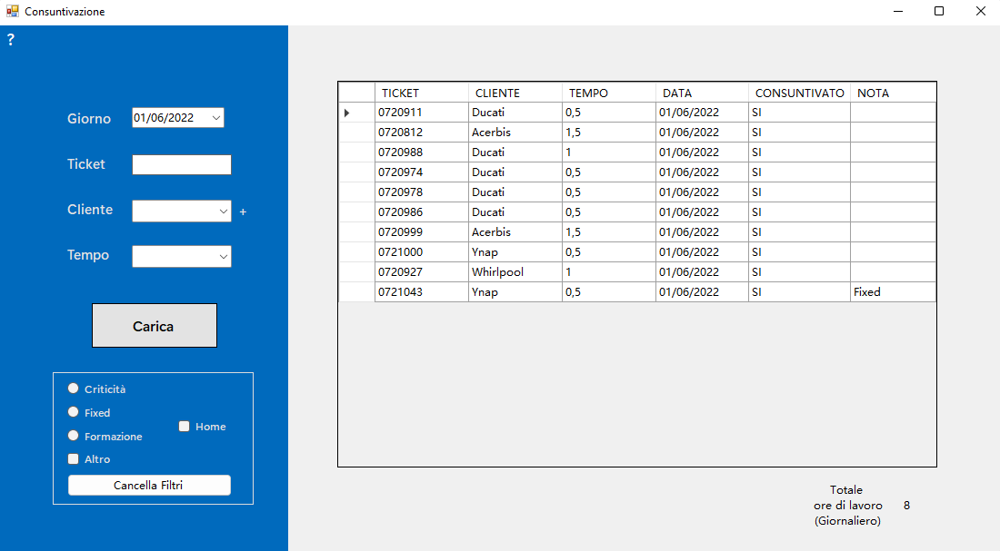
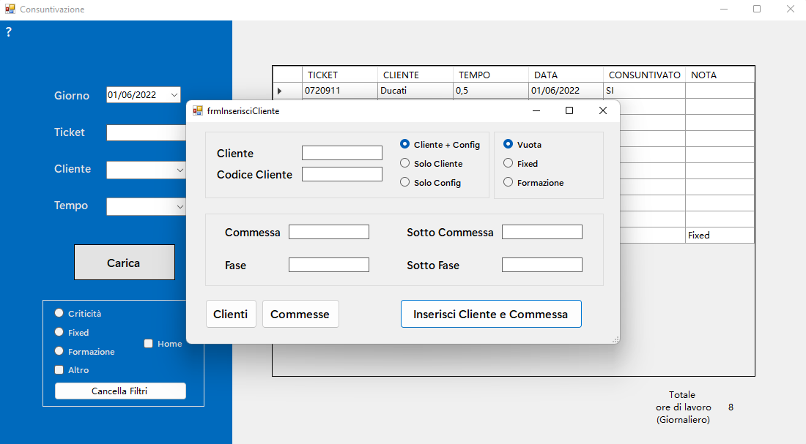
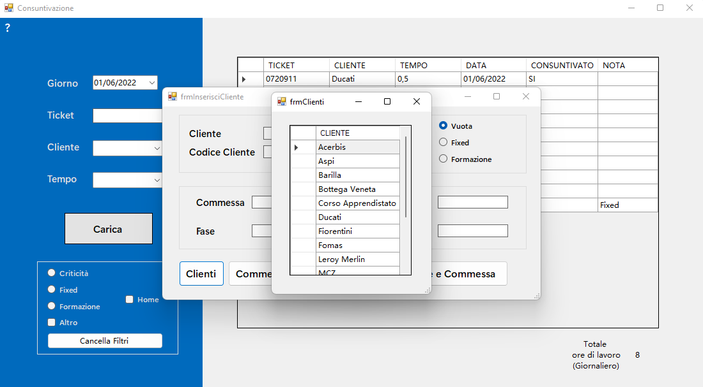
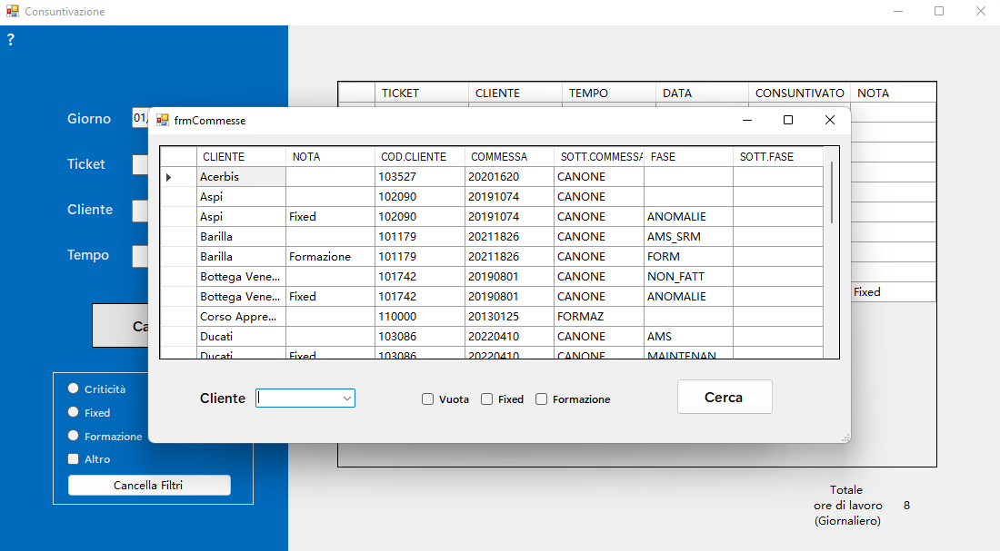
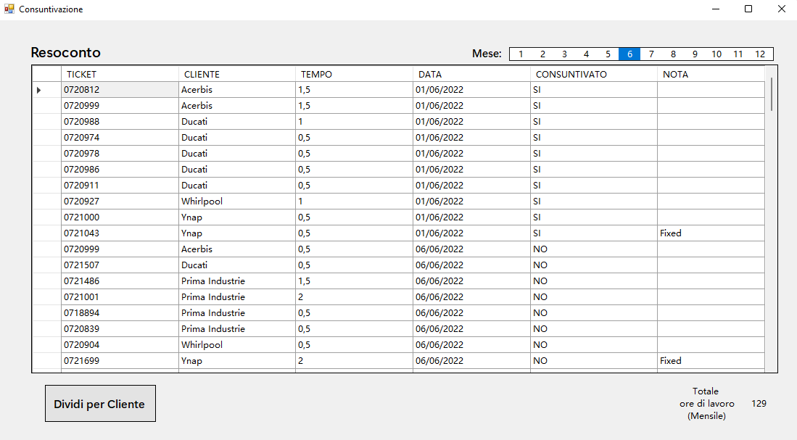
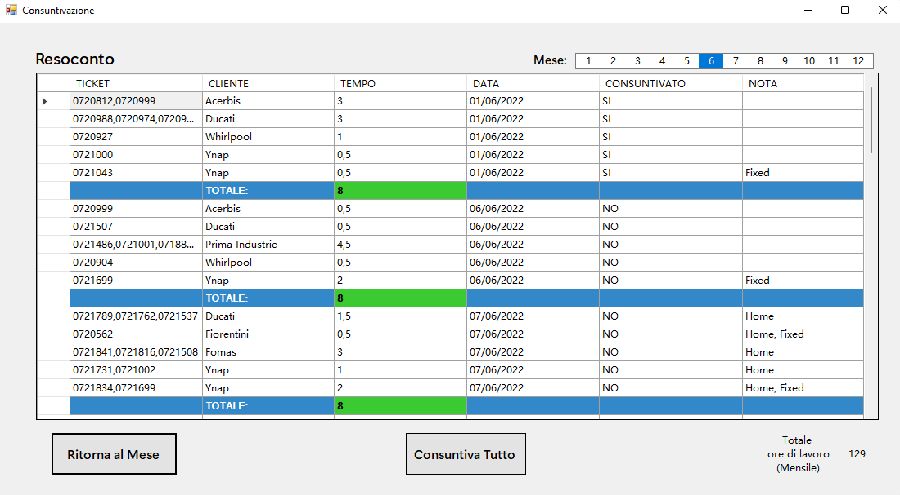

Documentazione per il programma di Consuntivazione
Home Page

Questa è la home page, è strutturata nel seguente modo:
- Lato sinistro: tutti i campi presenti all’interno dell’area blu, sono destinati all’inserimento di un ticket
- Lato destro: è presente una rappresentazione grafica della giornata selezionata
Funzionamento lato sinistro
I campi obbligatori presenti sono:
- Giorno: da qui è possibile selezionare il giorno che si desidera vedere/modificare. Una volta selezionato, la tabella di destra si aggiornerà automaticamente
- Ticket: questa è una text-box in cui è possibile inserire solo numeri (0-9) oppure il simbolo (/) in caso di mancanza ticket (es. Criticità)
- Cliente: questa è una combo-box in cui è possibile inserire il cliente. Questo campo si compilerà in automatico durante la scrittura del cliente premendo tab non appena si vede il suggerimento
- Tempo: questa è una combo-box in cui è possibile inserire un tempo di risoluzione. Per semplificare l’inserimento, anche questo campo è provvisto di suggerimenti come il campo “Clienti”
- Carica: questo bottone ti permette di inserire il ticket e ti segnala in caso di mancati campi obbligatori o di errori con i dati inseriti
I campi “facoltativi” sono quelli presenti all’interno della group-box con bordo bianco sotto al tasto “Carica” e sono:
- (Vuoto): ovvero quando tutti i campi sono defleggati, indica la commessa base del cliente
- Criticità: indica una criticità Dashboard (solitamente affiancato ad un numero ticket uguale a “/“)
- Fixed: indica un attività di maintenance
- Formazione: indica una formazione o coordinamento
- Altro: nota libera
- Home: indica lo “Smart Working”
- Cancella Filtri: tasto che deflegga tutti i campi
N.B. Lato sinistro
Giorno:
- Se il giorno selezionato è diverso da quello odierno, in caso di modifica verrà lasciato qualche secondo per visualizzare il cambio del dato e dopodiché si verrà reindirizzati al giorno odierno
- Se il giorno selezionato è diverso da quello odierno, è possibile effettuare una modifica alla volta. Questa funzione è stata introdotta per evitare la modifica di ulteriori dati anche durante il re-indirizzamento del punto 1. D’altronde non si è soliti a modificare molti dati dei giorni precedenti
- Se il giorno selezionato è uguale a quello odierno, invece, la modifica multipla è consentita. (Qui davvero necessaria)
Ticket:
- per evitare la ridondanza dei ticket in tabella, è stata introdotta una funzione che, in caso di ticket diverso da “/”, confronta il ticket che si vuole inserire con quelli già presenti della data odierna. Se trova una confidenza, il ticket non si inserisce nuovo, ma va a modificare quello già esistente aumentando il tempo di lavorazione in base hai dati richiesti. (Esempio pratico screen)
Cliente:
- I clienti presenti all’interno della combo-box, sono valorizzati in base ai dati presenti sulla tabella “Clienti” a DB (spiegare come vederli con degli screen)
- Se si inserisce un cliente che non ha la commessa selezionata, il ticket non verrà inserito e verrà segnalato un errore
Altro:
- Fleggando questa check-box, verrà chiesto di inserire una nota scritta. Le cose vietate da scrivere sono (Fixed, Formazione, Home, Criticità) in quanto sono campi glia selezionabili con i flag
- Non è possibile inserire un tempo extra, verrà inserito in modo automatico quando si superano le 8 ore, in alternativa sarà possibile modificarlo
- Al momento non è ancora stata gestita la problematica delle note che iniziano con “Fj” o successivo fino a “Zz”
Home:
- Se viene inserito o modificando un ticket con o senza la nota “Home”, verrà impostato anche su tutti gli altri ticket del giorno
Funzionamento lato destro
Nel lato destro, sono mostrati in modo tabellare tutti i ticket che sono stati inseriti nel giorno selezionato.
Le operazioni che si possono fare con questa tabella sono le seguenti:
-
Tasto sinistro:
- Se si clicca su un qualsiasi ticket presente al di sotto della colonna “TICKET”, si verrà reindirizzati alla pagina di Mantis
-
Tasto destro:
-
Se si clicca su una qualsiasi cella, è possibile entrare in modifica con l’apposito menu (mettere lo screen di tutti i menu).
I criteri di modifica sono gli stessi dell’inserimento
- Per la colonna “CONSUNTIVATO” cliccando una cella, il contenuto cambia da “NO” a “SI” o viceversa
- Cliccando sulla colonna 0 (quella per selezionare la riga), è possibile eliminare il ticket inserito
Inserimento nuovo cliente e/o commessa
Per entrare nel menu di inserimento clienti e/o commesse, è necessario premere il tasto “+” alla destra della combo-box cliente

In questo menu è possibile decidere se inserire:
- Cliente + Config
- Solo Cliente
- Solo Config
In caso di inserimento di Configurazioni
È possibile scegliere il tipo di commessa con:
- Vuota: commessa standard
- Fixed
- Formazione
I campi necessari da inserire nelle text-box (Codice Cliente, Commessa, Sotto Commessa, Fase, Sotto Fase) devono essere presi dai codici di GoldenRing e sono divisi in obbligatori e facoltativi.
Quelli obbligatori sono:
- Cliente
- Commessa
- Sotto Commessa
Quelli facoltativi sono:
In caso di inserimento Cliente
È necessario inserire solamente il campo “Cliente”
Visualizzazione Clienti e Commesse
In questo menu, in basso a sinistra, sono presenti 2 tasti:
Clienti:

Premendo su questo tasto, appare un nuovo menu in cui è possibile visualizzare tutti i clienti già valorizzati.
Per modificare il contenuto delle celle, è necessario premere il tasto destro.
Commesse:

Premendo su questo tasto, appare un nuovo menu in cui è possibile visualizzare tutte le commesse già valorizzate.
Per modificare il contenuto delle celle, è necessario premere il tasto destro.
Inoltre, è possibile filtrare le informazioni attraverso i campi sotto la tabella.
Visualizzazione Mensile
Per passare alla visualizzazione mensile, sarà necessario cliccare sulla label in basso a destra (“Totale ore di lavoro”).
Una volta premuto, si passerà alla seguente schermata:

Qui è possibile visualizzare un resoconto mensile dei ticket effettuati con le relative informazioni.
Anche qui è possibile effettuare delle modifiche dei ticket utilizzando il tasto destro sulle celle. (tranne che per il tempo)
Struttura della pagina
In alto a destra è presente una list-box in cui è possibile selezionare il mese da visualizzare. (a breve sarà disponibile anche la possibilità di selezionare l’anno!)
Sotto la tabella, a destra è presente la label che se cliccata rimanda alla pagina iniziale di inserimento ticket.
A sinistra, invece, è presente il tasto “Dividi per Cliente”.
Dividi per Cliente

Questa è la pagina più importante per la consuntivazione.
Qui è possibile visualizzare il resoconto mensile raggruppato per Data, Cliente, Ticket e Nota.
Struttura della pagina
La struttura della pagina è uguale a quella della visualizzazione mensile con qualche piccola differenza.
In basso a destra, il tasto “Dividi per Cliente” ha cambiato nome in “Ritorna al Mese” che se premuto riporta alla visualizzazione mensile
In basso al centro è presente il tasto “Consuntiva Tutto”
Funzionamento della Pagina
La funzione di questa pagina è quella di raggruppare i dati per giorno in modo di consuntivare su Golden Ring ogni commessa senza doppi.
Qui non è possibile modificare i dati, però è possibile essere reindirizzati alla pagina iniziale per apporle.
Per consuntivare effettivamente le ore su Golden Ring, bisogna seguire questi step preliminari:
- Accedere al portale di Golden Ring sul browser
- Andare sulla pagina della consuntivazione manuale
- Se non è attiva, abilitare l’estensione con lo script di inserimento automatico
Completati questi step, è possibile procedere alla consuntivazione in 2 modi:
- Manuale: cliccando su “NO” (sotto la colonna “CONSUNTIVATO”) per tutti i ticket che si desidera consuntivare
- Automatico: cliccando il tasto “Consuntiva Tutto”
N.B. Nel caso in cui una determinata riga risultasse come consuntivata quando in realtà non lo è, bisogna cliccare su “SI” e verrà chiesta la conferma.